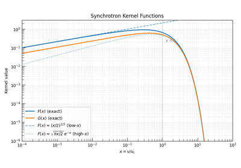
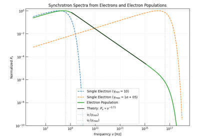
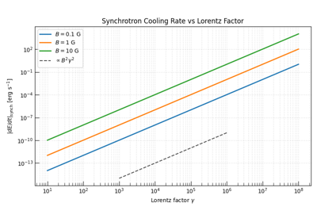
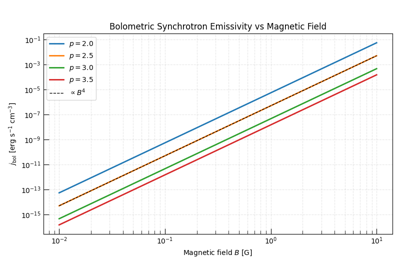
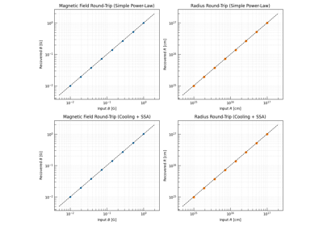
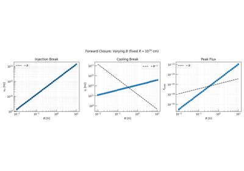

Physics Backend Examples - Synchrotron#
In this example gallery, we’ll showcase the radiation.synchrotron module and its capabilities.
For detailed documentation regarding synchrotron radiation physics, please refer to the
Synchrotron Radiation Theory. For notes on the synchrotron API and how to use all of the various
functions, please refer to the synchrotron_overview.

The Synchrotron Kernel Functions F(x) and G(x)

Synchrotron Spectra from Single Electrons and Electron Populations

Electron Cooling — the Synchrotron Radiative Cooling Engine

Bolometric Synchrotron Emissivity and Equipartition

Recovering Physical Parameters from an Observed SED: the Inverse Closure

From Physical Parameters to SED Parameters: the Forward Closure